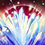

ДК Танк билд
Броня
Броню из сета "Ebon Armory" можно получить в Крипте Сердец.
Броню из сета "Roar of Alkosh" можно получить формя Пасть Лорхаджа.
Сет "Lord Warden" является монстр сетом, голову можно получить из последнего босса в ветеранской Тюрьме Имперсоко города, а наплечники выпадают из сундука с наградой Ургарлаг Бич Вождей в анклаве Неустрашимых.
| Часть брони | Сет | Тип брони | Трейт | Зачарование |
|---|---|---|---|---|
| Грудь | Ebon Armory | Тяжёлый | Reinforced | Трёх-статка |
| Пояс | Ebon Armory | Тяжёлый | Sturdy | Здоровье |
| Обувь | Ebon Armory | Тяжёлый | Sturdy | Здоровье |
| Поножи | Ebon Armory | Тяжёлый | Infused | Трёх-статка |
| Руки | Ebon Armory | Тяжёлый | Sturdy | Здоровье |
| Голова | Lord Warden | Лёгкий | Infused | Трёх-статка |
| Плечи | Lord Warden | Средний | Sturdy | Здоровье |
| Ожерелье | Roar of Alkosh | Ювелирка | Infused | Ускорение восстановления зелий |
| Кольцо | Roar of Alkosh | Ювелирка | Infused | Уменьшение стоимости блока |
| Кольцо | Roar of Alkosh | Ювелирка | Infused | Уменьшение стоимости блока |
| Оружие 1 | Roar of Alkosh | Меч | Infused | Weakening Enchantment |
| Оружие 1 | Roar of Alkosh | Щит | Infused | Трёх-статка |
| Оружие 2 | Roar of Alkosh | Морозный посох | Infused | Crusher Enchantment |
Способности
- 